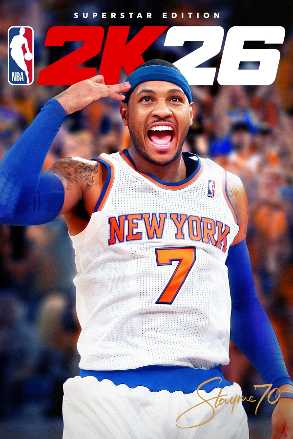

NBA 2K26
Every archived year-end list appearance, including placement and points earned.
About the Game
NBA 2K26 Leave No Doubt EditionThis edition includes virtual currency, MyTEAM content, MyCAREER content, and more:135,000 VCSeason 1 Pro Pass***Summer Pass (Season 7-9 Pro Passes)MyTEAMLeave No Doubt MyTEAM Pack:- 1x Galaxy Opal Player Card in December 2025- 1x Invincible Player Card in May 2026Full Series 1 Team SelectionTriple Threat Park Free Agent Pack5x Series 1 Packs2-Hour 2XP CoinMyCAREER25x 6 Types of Skill Boosts25x 3 Types of Gatorade Boosts2-Hour 2XP CoinShai Gilgeous-Alexander Cover JerseyPuffer JacketBragging rights are on the line in MyCAREER, MyTEAM, MyNBA, The W, and Play Now—leave no doubt that you wear the crown.*Internet connection and NBA 2K Account required to redeem and use bonus content. Terms apply.**NBA 2K26 Leave No Doubt Edition (Digital) only available through September 7, 2025. Availability restrictions apply.***NBA 2K26 Pro Passes and Hall of Fame passes are available for separate purchase and require base game, internet connection and NBA 2K account. Paid premium passes unlock additional rewards for the season that are earnable through gameplay. Progress and rewards reset at the end of each season. NBA 2K26 Superstar EditionThis edition includes virtual currency, MyTEAM content, MyCAREER content, and more:100,000 VCMyTEAMFull Series 1 Team SelectionTriple Threat Park Free Agent Pack5x Series 1 Packs2-Hour 2XP CoinMyCAREER25x 6 Types of Skill Boosts25x 3 Types of Gatorade Boosts2-Hour 2XP CoinShai Gilgeous-Alexander Cover JerseyBragging rights are on the line in MyCAREER, MyTEAM, MyNBA, The W, and Play Now—leave no doubt that you wear the crown.*Internet connection and NBA 2K Account required to redeem and use bonus content. Terms apply. About the GameBragging rights are on the line in MyCAREER*, MyTEAM, MyNBA, The W, and Play Now. Showcase your bag of moves with hyper realism, Powered by ProPLAY™, and challenge your friends, or rivals, in NBA 2K26’s competitive modes—and leave no doubt that you wear the crown.POWERED BY ProPLAY™Dominate every possession with immersive technology that directly translates NBA footage into realistic gameplay. Feel more connected to every dribble and crossover with revamped size-ups and experience fast-paced, dynamic movement with all-new ProPLAY features.SQUAD UP IN THE CITYBuild a transcendent MyPLAYER and climb the competitive ranks to reach the pinnacle of NBA stardom in an all-new MyCAREER journey. Team up with friends in a stunning, streamlined City, earn recognition and increase your REP, and battle rival squads for Park supremacy.UNITE STARS IN MyTEAMCollect and compete with NBA and WNBA superstars in MyTEAM. Assemble a star-studded roster, put your dream team to the test in new single-player and multiplayer modes, and acquire new cards to make your MyTEAM fantasy a reality.YOUR TEAM, YOUR STORYLead an NBA franchise as a General Manager in MyNBA. Choose from all 30 teams, experience 30 unique MyGM storylines with real-world inspiration, and chase the ultimate goal: to win a championship. Influence the future of the sport and leave an indelible mark on the league.*Internet connection and NBA 2K Account required to redeem and use bonus content. Terms apply.Play Now, MyNBA, and The W are available offline. All other game modes and features require Internet connection and may require online account registration (varies 13+).
| Released | 2025-09-04 |
|---|---|
| Developer | Visual Concepts |
| Publisher | 2K Games |
| Genres | Sports |
| Platforms | PC, PlayStation 5 |
SingleplayerSteam AchievementsMultiplayerSteam CloudCo-opcooperativePartial Controller SupportOnline Co-OpSplit ScreenLocal Co-OpControllerLocal Multiplayer
Where to Buy
Game information provided by RAWG.
Points by Year
List History
| Year | Source | List | Placement | Points |
|---|---|---|---|---|
| 2025 | ESPN | The 25 best video games of 2025 | Unranked | 3 |
| 2025 | GameSpot | The Best Games Of 2025 | Unranked | 1 |